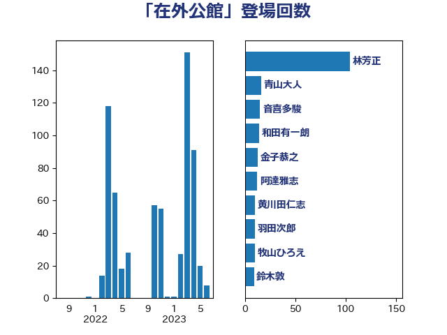

単語「在外公館」

| 林芳正 | 自由民主党 | 104 回 |
| 青山大人 | 立憲民主党 | 16 回 |
| 音喜多駿 | 日本維新の会 | 15 回 |
| 和田有一朗 | 日本維新の会 | 14 回 |
| 金子恭之 | 自由民主党 | 13 回 |
| 阿達雅志 | 自由民主党 | 12 回 |
| 黄川田仁志 | 自由民主党 | 10 回 |
| 羽田次郎 | 立憲民主党 | 10 回 |
| 牧山ひろえ | 立憲民主党 | 10 回 |
| 鈴木敦 | 国民民主党 | 9 回 |
| 篠原豪 | 立憲民主党 | 8 回 |
| 平木大作 | 公明党 | 8 回 |
| 岸田文雄 | 自由民主党 | 8 回 |
| 小熊慎司 | 立憲民主党 | 7 回 |
| 寺田稔 | 自由民主党 | 7 回 |
| 金子道仁 | 日本維新の会 | 6 回 |
| 細田博之 | 自由民主党 | 6 回 |
| 河野太郎 | 自由民主党 | 6 回 |
| 松川るい | 自由民主党 | 6 回 |
| 山本剛正 | 日本維新の会 | 6 回 |
| 片山大介 | 日本維新の会 | 5 回 |
| 柴田巧 | 日本維新の会 | 5 回 |
| 尾身朝子 | 自由民主党 | 5 回 |
| 堀井巌 | 自由民主党 | 5 回 |
| 吉川ゆうみ | 自由民主党 | 5 回 |
| 高橋光男 | 公明党 | 4 回 |
| 鈴木貴子 | 自由民主党 | 4 回 |
| 緒方林太郎 | 無所属 | 4 回 |
| 徳永久志 | 無所属 | 4 回 |
| 山田賢司 | 自由民主党 | 4 回 |
| 寺田学 | 立憲民主党 | 4 回 |
| 中川郁子 | 自由民主党 | 4 回 |
| 上杉謙太郎 | 自由民主党 | 4 回 |
| 金城泰邦 | 公明党 | 3 回 |
| 田島麻衣子 | 立憲民主党 | 3 回 |
| 櫻井周 | 立憲民主党 | 3 回 |
| 松本剛明 | 自由民主党 | 3 回 |
| 杉本和巳 | 日本維新の会 | 3 回 |
| 小野田紀美 | 自由民主党 | 3 回 |
| 太栄志 | 立憲民主党 | 3 回 |
| 中川貴元 | 自由民主党 | 3 回 |
| 上田清司 | 国民民主党 | 3 回 |
| 高木啓 | 自由民主党 | 2 回 |
| 西岡秀子 | 国民民主党 | 2 回 |
| 芳賀道也 | 国民民主党 | 2 回 |
| 秋本真利 | 無所属 | 2 回 |
| 石井苗子 | 日本維新の会 | 2 回 |
| 浮島智子 | 公明党 | 2 回 |
| 浜田靖一 | 自由民主党 | 2 回 |
| 武井俊輔 | 自由民主党 | 2 回 |
| 斎藤アレックス | 国民民主党 | 2 回 |
| 市村浩一郎 | 日本維新の会 | 2 回 |
| 尾辻秀久 | 無所属 | 2 回 |
| 小西洋之 | 立憲民主党 | 2 回 |
| 小林鷹之 | 自由民主党 | 2 回 |
| 伊藤俊輔 | 立憲民主党 | 2 回 |
| 三浦信祐 | 公明党 | 2 回 |
| 青柳陽一郎 | 立憲民主党 | 1 回 |
| 青柳仁士 | 日本維新の会 | 1 回 |
| 鈴木庸介 | 立憲民主党 | 1 回 |
| 野村哲郎 | 自由民主党 | 1 回 |
| 遠藤良太 | 日本維新の会 | 1 回 |
| 葉梨康弘 | 自由民主党 | 1 回 |
| 萩生田光一 | 自由民主党 | 1 回 |
| 自見はなこ | 自由民主党 | 1 回 |
| 羽生田俊 | 自由民主党 | 1 回 |
| 緑川貴士 | 立憲民主党 | 1 回 |
| 篠原孝 | 立憲民主党 | 1 回 |
| 穀田恵二 | 日本共産党 | 1 回 |
| 福重隆浩 | 公明党 | 1 回 |
| 福田昭夫 | 立憲民主党 | 1 回 |
| 神津たけし | 立憲民主党 | 1 回 |
| 田名部匡代 | 立憲民主党 | 1 回 |
| 源馬謙太郎 | 立憲民主党 | 1 回 |
| 浅野哲 | 国民民主党 | 1 回 |
| 河野義博 | 公明党 | 1 回 |
| 永岡桂子 | 自由民主党 | 1 回 |
| 武部新 | 自由民主党 | 1 回 |
| 橋本岳 | 自由民主党 | 1 回 |
| 榛葉賀津也 | 国民民主党 | 1 回 |
| 杉尾秀哉 | 立憲民主党 | 1 回 |
| 末松義規 | 立憲民主党 | 1 回 |
| 末松信介 | 自由民主党 | 1 回 |
| 新垣邦男 | 立憲民主党 | 1 回 |
| 後藤茂之 | 自由民主党 | 1 回 |
| 岸真紀子 | 立憲民主党 | 1 回 |
| 岩谷良平 | 日本維新の会 | 1 回 |
| 山添拓 | 日本共産党 | 1 回 |
| 山口晋 | 自由民主党 | 1 回 |
| 小田原潔 | 自由民主党 | 1 回 |
| 大口善徳 | 公明党 | 1 回 |
| 吉良州司 | 無所属 | 1 回 |
| 吉田宣弘 | 公明党 | 1 回 |
| 佐藤正久 | 自由民主党 | 1 回 |
| 伊波洋一 | 無所属 | 1 回 |
| 中条きよし | 日本維新の会 | 1 回 |
| 中川正春 | 立憲民主党 | 1 回 |
| 上川陽子 | 自由民主党 | 1 回 |